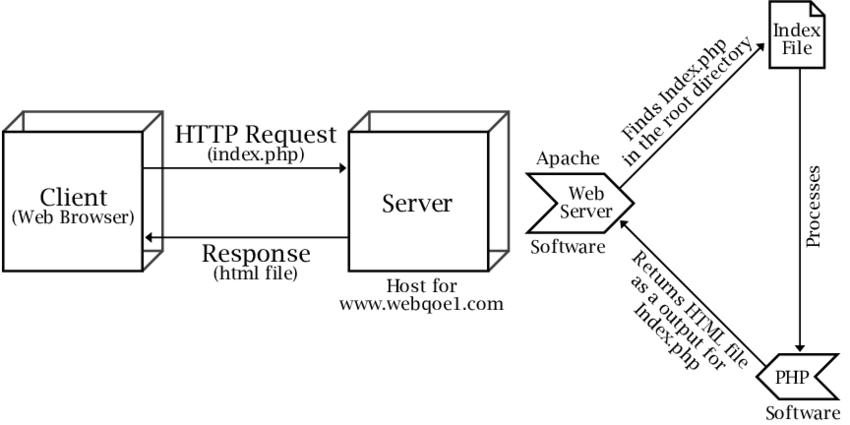

In computing, a server is a piece of computer hardware or software that provides functionality for other programs or devices, called "clients". This architecture is called the client-server model.
Server, network computer, computer program, or device that processes requests from a client (see client-server architecture). On the World Wide Web, for example, a Web server is a computer that uses the HTTP protocol to send Web pages to a client's computer when the client requests them. The web server finds and assembles all the information needed to display the site – including things like ads, dynamic elements, content and more. The server then sends this complete package of information back to the web browser as a response. The web browser receives this complete page and displays it for the user.
Types of Servers

- Web Server
- Proxy Server
- FTP Server
- Application Server
- File Server
- DataBase Server
- Mail Server
- Print Server
- DNS Server
- Gaming Server
Web Server

A web server is a computer that runs websites. It's a computer program that distributes web pages as they are requisitioned. The basic objective of the web server is to store, process and deliver web pages to the users. This intercommunication is done using Hypertext Transfer Protocol (HTTP).
Leading web servers include Apache, Microsoft's Internet Information Services (IIS) and Nginx -- pronounced engine X. Other web servers include Novell's NetWare server, Google Web Server (GWS) and IBM's family of Domino servers.
Proxy Server

In computer networking, a proxy server is a server application that acts as an intermediary between a client requesting a resource and the server providing that resource.
A proxy server is a computer system or router that functions as a relay between client and server. It helps prevent an attacker from invading a private network and is one of several tools used to build a firewall. The word proxy means "to act on behalf of another," and a proxy server acts on behalf of the user.
A VPN is similar to a proxy, but instead of working with single apps or websites, it works with every site you visit or app you access. Like a proxy, when you visit a website after first logging into a VPN, your IP address is hidden and replaced with the IP address of your VPN provider.
FTP : File Transfer Protocol Server
The File Transfer Protocol is a standard communication protocol used for the transfer of computer files from a server to a client on a computer network. FTP is built on a client-server model architecture using separate control and data connections between the client and the server.
The server waits for clients to connect to it and issue commands that tell the server to upload, download, or list directories. The FTP protocol is the commands the FTP server uses to accomplish this. FTP enables the transfer of files back and forth between computers or through the cloud.
Application Server

An application server is a server that hosts applications. Application server frameworks are software frameworks for building application servers. An application server framework provides both facilities to create web applications and a server environment to run them.
Among the popular application server platforms are J2EE, WebLogic, Glassfish, JBoss Enterprise Application Platform, Apache Tomcat, and Apache Geronimo.
File Server

In computing, a file server is a computer attached to a network that provides a location for shared disk access, i.e. storage of computer files that can be accessed by the workstations that are able to reach the computer that shares the access through a computer network.
A file server is a computer responsible for the storage and management of data files so that other computers on the same network can access the files. It enables users to share information over a network without having to physically transfer files.
DataBase Server
A database server is a server which uses a database application that provides database services to other computer programs or to computers, as defined by the client-server model.
Database server is any server that runs a network database application and maintains database files, such as Microsoft SQL Server or Oracle. SQL Server is a high-performance database management system.
Mail Server

Within the Internet email system, a message transfer agent, or mail transfer agent, or mail relay is software that transfers electronic mail messages from one computer to another using SMTP. The terms mail server, mail exchanger, and MX host are also used in some contexts.
The Google's Gmail service provides email customer access for sending and receiving emails without having to log into the account online. For several security reasons, this email server uses a POP3 protocol to make sure that your email customer supports an encrypted SSL connection before running the setup.
Print Server
A print server is a software application, network device or computer that manages print requests and makes printer queue status information available to end users and network administrators. Print servers are used in both large enterprise and small or home office ( SOHO ) networks.
Every Wi-Fi print server device has an onboard wireless module you can use to share a device through the network without having to bother with wires. The only two cables you need is a standard USB to attach the printer, and a feed cable to power the print server
DNS : Domain Name System Server
A DNS is a naming system that takes alphanumeric domain names (or “hostnames”) and turns them into numeric IP addresses. Essentially, DNS servers act as translators. When you input a web address into your browser, it is forwarded to a DNS server from your router, where it's then dissolved and returned as an IP address.
DNS, or the Domain Name System, translates human readable domain names (for example, www.amazon.com) to machine readable IP addresses (for example, 192.0. 2.44).
Gaming Server
A game server (also sometimes referred to as a host) is a server which is the authoritative source of events in a multiplayer video game. The server transmits enough data about its internal state to allow its connected clients to maintain their own accurate version of the game world for display to players.
Game Servers fully manages Agones, an open source game server management project that runs on Kubernetes. Automatically scale your fleet for daily peaks, game events, or content drops, and easily manage multiple versions of your game server code.